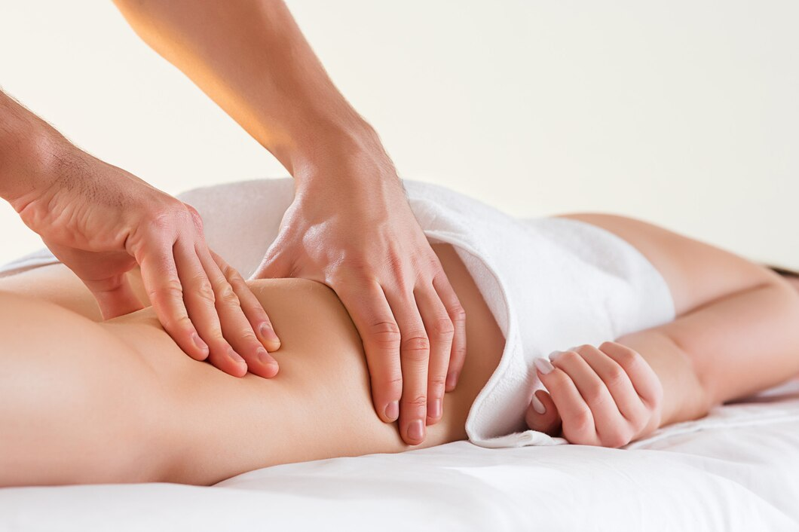
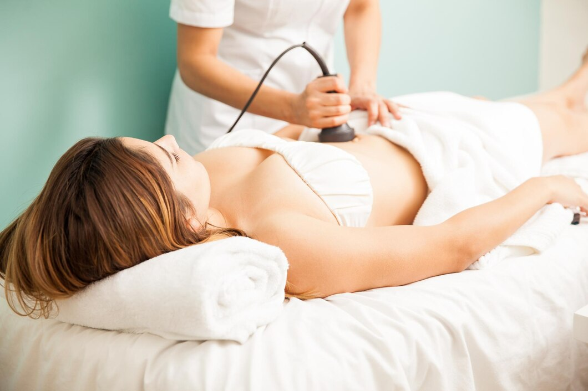

- Pilates Maquinas
- Tecnicas Invasivas
- Drenaje Linfatico Manual
- Fisioterapia Dermatofuncional
- Suelo Pelvico

El método Pilates fue creado por Joseph H. Pilates a principios del siglo XX, el cual desarrolló un amplio sistema de ejercicios basados en los principios de la concentración, la unidad, la respiración, la precisión y la fluidez. Estos ejercicios combinan el fortalecimiento y el estiramiento muscular con la respiración mejorando el control central y la estabilidad, y restaurando el equilibrio muscular.
Beneficios:
Mejora la estabilidad lumbopélvica.
Mejora la movilidad y el control postural.
Estiliza la figura.
Mejora la coordinación, la agilidad y el equilibrio.
Aumenta la fuerza y mejora la resistencia muscular.
Mejora el control respiratorio.
Disminuye el dolor de espalda.
Disminuye el estrés.
Mejora la sensación de bienestar.

La Electrolisis Percutánea Intratisular (EPI®) es una técnica mínimamente invasiva que consiste en la aplicación de corriente galvánica a través de una aguja en el tejido lesionado. Esta técnica, puede estar indicada en tendinopatías, roturas musculares, bursitis, fascitis, fibrosis y otras lesiones de tejido blando.
La electrolisis es un estímulo que pretende reactivar, facilitar y mejorar el proceso de recuperación del tejido, llegando en ocasiones a reducir el tiempo de recuperación, disminuir las recidivas y a mejorar estructuralmente el tejido lesionado. Es una técnica que se podrá combinar con otras y se acompañará, generalmente, de trabajo activo.
Para una correcta aplicación de la electrolisis, se debe utilizar la ecografía. De esta forma, se podrá valorar la lesión y guiar la intervención a tiempo real. La experiencia del profesional y el ecógrafo utilizado marcarán la diferencia, ya que es recomendable un ecógrafo de alta gama, para ver la lesión con más detalle, y afinar más en la aplicación de la EPI®.

El Drenaje linfático Manual, es la técnica manual basada en “finos» estímulos táctiles, que movilizan la linfa a través del sistema linfático.
Utiliza diversas maniobras que para su ejecución requieren un profundo conocimiento del sistema linfático y del tejido conjuntivo. Deben ejercerse con la presión adecuada y con una cadencia o ritmo que estimule la contracción de los angiones linfáticos.
El efecto sedante y relajante secundario a una correcta realización del Drenaje Linfático Manual mejora la sensación de bienestar del paciente y potencia el efecto del drenaje al actuar sobre el sistema nervioso parasimpático.

La fisioterapia dermatofuncional es la rama de la fisioterapia encargada de la prevención, promoción y rehabilitación del sistema tegumentario. Trata la piel como un todo e intenta restaurar, no solo la estética (que es lo que trataba la fisioterapia estética), sino que va más allá buscando la reparación de la función y con ello la mejora del bienestar y calidad de vida de los pacientes
Se usan diferentes tecnicas para el tratamiento:
Ondas de choque
Diatermia
Maderoterapia
La Fisioterapia del Suelo Pélvico es la especialidad de la fisioterapia destinada al tratamiento y a la prevención de diferentes tipos de disfunciones de ésta área en todos los grupos poblacionales.

Terapia manual: Amplio número de técnicas articulares, musculares, miofasciales, neurales… que al igual que en el resto de alteraciones músculoesqueléticas del cuerpo mejoran la función y el dolor.
Electroestimulación muscular: Ayuda a mejorar las propiedades del músculo como son el tono, la fuerza y la velocidad de contracción. Utilizándolo de manera aislada o como complemento a otros ejercicios activos que se le indicarán en cada caso.
Neuromodulación perférica: Permite estimular vías nerviosas en zonas diferentes a la localización del problema, mediante una aplicación percutánea o transcutánea, para lograr así unos efectos a distancia en los casos de alteraciones de control vesical o ano-rectal, y con el fin de estimular reflejos.
Biofeedback: Ayuda al paciente a mejorar la función y la contracción de su musculatura, a través de un registro electromiográfico y/o manométrico, mediante la aportación de imágenes que le indican como es esa contracción, para a partir de ahí poder tener un mejor control de la musculatura implicada en cada una de las alteraciones.
Ecografía: La valoración morfofuncional (RUSI) propia de la fisioterapia, permite valorar distintas disfunciones del suelo pélvico, además de trabajar mediante biofeedback ecográfico, utilizando ecografía transabdominal, transperineal o intracavitaria.
Diatermia: Disponemos de Fisiowarm® 7.0 que permite la aplicación de diatermia o tecarterapia a través de aplicaciones intracavitarias o en la región abdominal. La diatermia ha demostrado ser de gran utilidad en distintas patologías de la región pelviperineal y en el tratamiento del dolor pélvico crónico.
Gimnasia abdominal hipopresiva® y Low Pressure Fitness®: Disciplinas de ejercicio que trabajan disminuyendo la presión intraabdominal y que nos ayudan a mejorar el tono de la musculatura de la faja abdominal y de los músculos del suelo pélvico, sobretodo en las fases más iniciales de la recuperación. Indicadas principalmente para postparto y diástasis abdominal, mejorando el estímulo que reciben nuestras estructuras de sostén visceral en la pelvis y contribuyendo a la mejora de la función.